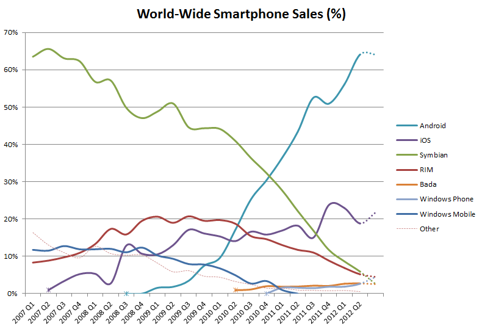

Mobile HTML5 in the open world
Kimmo Puputti ☆ OKFestival Sep 19, 2012
About me
- Frontend stuff at Futurice since May 2011
- Previously Hexagon IT, Zokem, TKK
- Graduated from Aalto University
-
Master's Thesis (2012):
Mobile HTML5: Implementing a Responsive Cross-Platform ApplicationAvailable at: http://kpuputti.github.com/thesis/
Futurice
Web, mobile and enterprise solutions, A Lean IT company
Outline
- What is HTML5?
- Why should I care?
- Native vs. HTML5: where are we at?
What is HTML5?

http://en.wikipedia.org/wiki/File:HTML5-APIs-and-related-technologies-by-Sergey-Mavrody.png
{kind=link}
<!DOCTYPE html>...
- Standardized parsing
- Standardized existing features in browsers
- New elements and attributes
- Accessibility features (e.g. forms)
- CSS3
-
APIs for web applications:
- Offline support
- Device APIs
- Multimedia and graphics (canvas!)
- Workers, sockets, drag and drop, etc.
It's all about JavaScript
Example: geolocation
Works also on mobile!
Code
navigator.geolocation.getCurrentPosition(function (pos) {
alert(pos.coords.latitude + ", " + pos.coords.longitude);
}, function () {
alert("Could not get location...");
});Why should I care?
Mark Zuckerberg:
The biggest mistake we made as a company was betting too much on HTML5. While building native apps that were basically just a wrapper for the mobile web standard let it experiment quickly, it made the apps run way too slow. We burnt two years.
Wait a second... it continues:
... it just wasn’t there. And it’s not that HTML5 is bad. I’m actually, on long-term, really excited about it. One of the things that’s interesting is we actually have more people on a daily basis using mobile Web Facebook than we have using our iOS or Android apps combined. So mobile Web is a big thing for us.
Simon Cross (Developer Advocate at Facebook):
Facebook's problems are not everyone's problems.
So which one is it, web or native?!
Sorry, wrong question.
Let's look at what we have

Charland, A., and Leroux, B. Mobile Application Development: Web vs. Native. Communications of the ACM 54, 5 (2011), 49-53.
Devices
- Laptops
- Desktops
- ereaders
- Game consoles
- Notebooks
- Mobile phones
- Tablets
- Watches
- TVs
- Home theaters
- Fridges
They all have a web browser!
</hype>
Native apps
Native apps
- Best performance
- Best UX
- Best integration to the platform
- UI innovation
However, do you need all this power?

Are you providing content or a service?
or
Are you providing an experience?
Is it ok to drop a large percentage of your potential users out of reach?
Is it enough to provide your service well for only some people?
Might be
http://upload.wikimedia.org/wikipedia/en/a/ac/World_Wide_Smartphone_Sales_Share.png
{kind=link}
Application stores
Unnecessary burden or a golden possibility?
- App submission
- Updates
- Monetization
- Discoverability
- Analytics
- Integration to social networks
The Web is you app store!
Hybrid apps
Hybrid apps
Combination of web and native technologies.
Hybrid apps
- Complex
- Following platform UI guidelines
- Difficult workflow
- Awesome web app vs. crappy native app
- PhoneGap is great, but has a lot of surprises
Web apps
Web apps
Write once, run everywhere.
well...
Mobile HTML5 apps are hard
- Browsers
- Supported features and APIs
- Not anymore just a collection of jQuery plugins
It's all about performance!
Follow up what Steve Souders has been doing for the past 5 years.
Know your tools
- AMD
- RequireJS
- MVC
- Grunt
- Modernizr
- Backbone.js
- Yeoman
- Sass
- less
- Functional programming
- JSHint
- Jasmine BDD
- Responsive design
- HTML5 Boilerplate
- Progressive enhancement
Summary
- Cross-platform is hard
- Cross-platform HTML5 is hard
-
You have to be on the web anyways
- Your site will be accessed with all types of devices
- Responsive web design
- Go native, if really needed
- Know the good and bad parts of web/native
- Know your place between idealism and realism
Tim Berners-Lee, Scientific American, 2010:
people must be able to put anything on the Web, no matter what computer they have, software they use or human language they speak and regardless of whether they have a wired or wireless Internet connection.
And it should be accessible from any kind of hardware that can connect to the Internet: stationary or mobile, small screen or large.
Thanks!
These slides available at: http://kpuputti.github.com/mobile-html5-presentation/
Contact info: